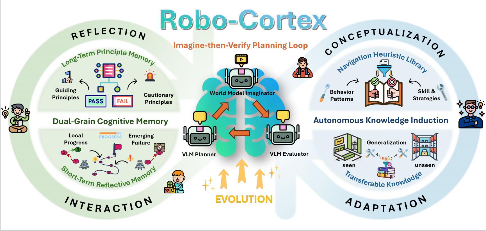
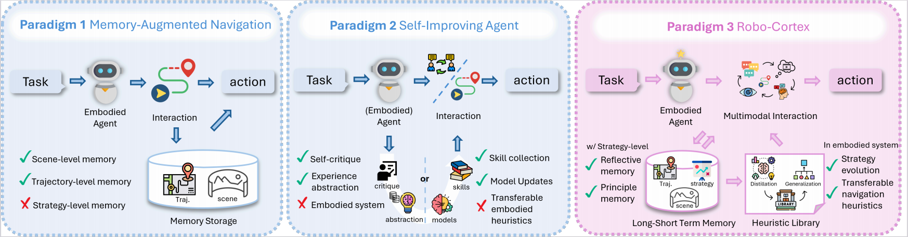
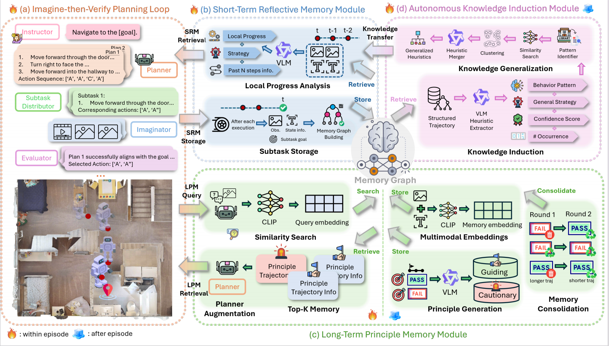
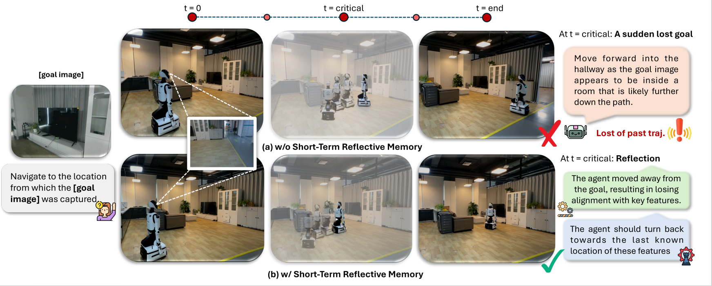

Overview of Robo-Cortex. Robo-Cortex is a self-evolving embodied navigation framework with three components: an Imagine-then-Verify planning loop for closed-loop decision making, Dual-Grain Cognitive Memory for reflection at two temporal scales, and Autonomous Knowledge Induction for distilling transferable navigation heuristics from experience. Together, they form an interaction-reflection-conceptualization-adaptation loop for continual strategy evolution.

Comparison of prior embodied-agent paradigms and Robo-Cortex. Memory-augmented navigation mainly preserves scene-level and trajectory-level context for decision making, but does not explicitly form strategy-level memory. Self-improving agents can refine behavior through critique, abstraction, or skill/model updates, yet are typically not grounded in closed-loop embodied interaction or do not induce transferable embodied heuristics. Robo-Cortex unifies reflective memory, principle memory, and heuristic induction in a self-evolving embodied framework that distills multimodal interaction experience into transferable navigation heuristics for future reflection, planning, and strategy evolution.

Internal Workflow of Robo-Cortex. Robo-Cortex integrates (a) Imagine-then-Verify Planning Loop, (b) Short-Term Reflective Memory, (c) Long-Term Principle Memory and (d) Autonomous Knowledge Induction through a shared memory graph. During execution, recent subtasks are analyzed for local progress and failure patterns, while related past experiences are retrieved as principle-level guidance. Meanwhile, accumulated trajectories are continually abstracted into reusable navigation heuristics and fed back into future reflection and planning, enabling continual strategy evolution over time.

Real-world benefit of short-term reflection. In an image-goal navigation task, the robot without SRM drifts away from the target after losing goal-relevant cues at a critical step. With SRM, Robo-Cortex detects the misalignment, reflects on the failure, and recovers by returning toward the last known goal-consistent region, leading to successful completion.